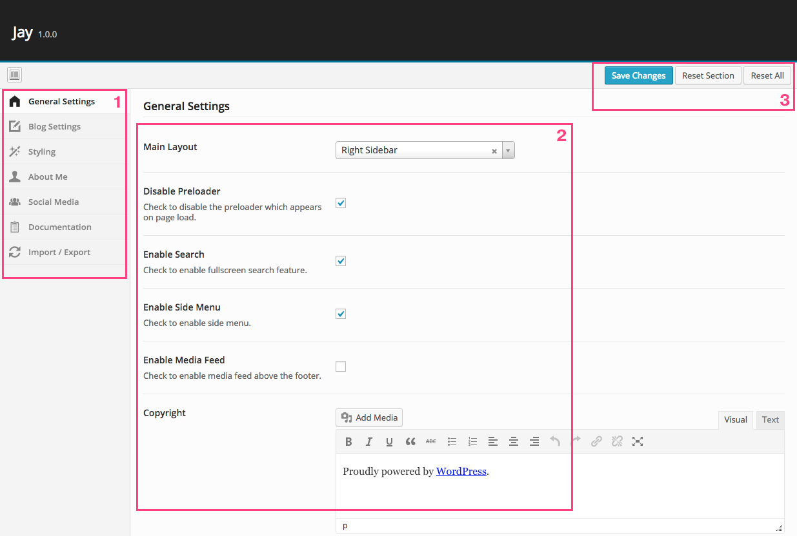

1. Hello World!
First of all, thank you so much for purchasing our premium theme.
If you need any help, open a ticket on our customer support system. We try our best to answer all the answers there, and want our all customers be happy and satisfied.
2. Installing WordPress
Installing WordPress is piece of cake. If you have already installed WordPress, that's cool. But if you haven't installed it yet, that's not a problem. Because Famous 5-Minute Install will help you to install WordPress on your server in just 5 minutes.
3. Installing Jay
Installed WordPress? Good job. Now it's a good time to install Jay. It's easier than installing WordPress, so it shouldn't be any problem to you.
- Navigate to Appearance > Themes on your WordPress admin panel.
- Click Add New Theme button.
- Click Upload.
- Click Choose File button, and choose
jay.zip file.
- Click Install Now button. That's it.
5. Jay Options
It would be so boring if your theme wasn't customizable. Just navigate to Jay Options on your WordPress admin panel, and you can customize your theme the way you want.
- This is main navigation of Jay Options
- This is main configuration section. You can customize settings here
- After modifying settings, please press Save Changes button. If you want to reset settings of current section to default, press Reset Section button, or Reset All button to reset all settings
Note: Please be careful with reset buttons, and don't forget to backup your settings in Import/Export section before resetting.

6. Post Formats
WordPress has 10 post formats which are Standard, Image, Audio, Video, Gallery, Quote, Link, Status, Chat and Aside. That's cool, but the coolest thing is your Jay supports all these post formats in more advanced and customized way.
- Standard
- Navigate to Posts > Add New on your WordPress admin panel.
- Give it a title and some content.
- Make sure choose Standard in Format metabox.
- If you want the post to have an image on top, choose a featured image from Featured Image metabox.
- Click Publish button.
- Image
- Navigate to Posts > Add New on your WordPress admin panel.
- Give it a title and some content.
- Make sure choose Image in Format metabox.
- Choose an image in Image field of IMAGE FORMAT section in Post Format Settings metabox.
- Click Publish button.
- Audio
- Navigate to Posts > Add New on your WordPress admin panel.
- Give it a title and some content.
- Make sure choose Audio in Format field.
- Add audio embed code such as SoundCloud in Audio Embed field of AUDIO FORMAT section in Post Format Settings metabox.
- Click Publish button.
- Video
- Navigate to Posts > Add New on your WordPress admin panel.
- Give it a title and some content.
- Make sure choose Video in Format field.
- Add video embed code such as Vimeo and YouTube in Video Embed field of VIDEO FORMAT section in Post Format Settings metabox.
- Click Publish button.
- Gallery
- Navigate to Posts > Add New on your WordPress admin panel.
- Give it a title and some content.
- Make sure choose Gallery in Format field.
- Choose images in Gallery Images field of GALLERY FORMAT section in Post Format Settings metabox.
- You can sort, remove and add new images after choosing images.
- Click Publish button.
- Quote
- Navigate to Posts > Add New on your WordPress admin panel.
- Give it a title and some content.
- Make sure choose Quote in Format field.
- Add source of the quote in Source Name field of QUOTE FORMAT section in Post Format Settings metabox.
- Add URL of the quote source in Source URL field of QUOTE FORMAT section in Post Format Settings metabox.
- Click Publish button.
- Link
- Navigate to Posts > Add New on your WordPress admin panel.
- Give it a title and some content.
- Make sure choose Link in Format field.
- Add text of the link in Link Text field of LINK FORMAT section in Post Format Settings metabox.
- Add URL of the link in Link URL field of LINK FORMAT section in Post Format Settings metabox.
- Click Publish button.
7. Featured Posts
Featured posts are great way to highlight some posts which are worth placing on top of page. Featuring posts is really easy job in Jay.
- Featured posts feature is disabled by default, so you have to enable it first. To enable it, navigate to Jay Options > Blog Settings.
- Check a checkbox of Enable Featured Posts field and click Save Changes button.
- Now edit the post you want to feature.
- Check Feature this post? in Featured Post metabox.
- You can display a custom label like "Featured Post", "Editor Choice" or anything else. To do that, just fill Post Label field.
8. Authentications
8.1. Instagram
- Registering a client
- First of all, you need to register a new client on Instagram Developer Documentation.
- Enter your site name into Application Name field.
- Enter some text about your site into Description field.
- Enter site URL into Website URL field. It must be homepage URL of your site. For example,
http://yoursite.com.
- Enter redirect URI into Redirect URI(s) field. It must be your homepage URL appended by
/wp-admin/admin.php?page=_options. For example, http://yoursite.com/wp-admin/admin.php?page=_options.
- Fill the captcha field and click Register button.
- Configuring in Jay Options
- Now copy CLIENT ID and paste into Instagram Client ID field.
- Copy CLIENT SECRET and paste into Instagram Client Secret field.
- Click Save Changes button and refresh the page.
- After refreshing the page, click Sign In with Instagram link.
- You will be redirected to Instagram authorization page. In this case, click Authorize button.
8.2. Flickr
- Creating an application
- First of all, you need to create a new application on Flickr App Garden.
- Unless your business is related to major brand, click APPLY FOR A NON-COMMERCIAL KEY.
- Enter your site name into What's the name of your app? field.
- Enter some text about your site into What are you building? field.
- Check two checkboxes and click Submit button.
- Configuring in Jay Options
- Now copy Key and paste into Flickr API Key field.
- Click here, enter your Flickr username and click Find button.
- Copy your Flickr User ID and paste into Flickr User ID field.
8.3. Dribbble
- Creating an application
- First of all, you need to create a new application on Dribbble Applications.
- Enter your site name into Name field.
- Enter some text about your site into Description field.
- Enter site URL into Website URL field. It must be homepage URL of your site. For example,
http://yoursite.com.
- Enter callback URL into Callback URL field. You can enter your home page URL.
- Check a checkbox and click Register application button.
- Configuring in Jay Options
- Now copy Client Access Token and paste into Dribbble Access Token field.
- Enter your Dribbble username into Dribbble Username field.
9. Social Links
- Fill the fields you want to display as social links in Jay Options > Social Media.
- There are Twitter, Facebook, YouTube, Pinterest, Dribbble, Instagram, GitHub, LinkedIn, Tumblr and Google+.
- Make sure fill them with valid and full URL, not just a username.
- Leave it blank if you don't want it to be displayed as a social link.
10. Shortcodes
10.1. Grid System
| Attribute Name |
Type |
Default Value |
Description |
| first |
boolean |
false |
Set true on every first column of rows. |
| last |
boolean |
false |
Set true on every last column of rows. |
[five_sixth]5/6 Column[/five_sixth]
[three_fourth]3/4 Column[/three_fourth]
[two_third]2/3 Column[/two_third]
[one_half]1/2 Column[/one_half]
[one_third]1/3 Column[/one_third]
[one_fourth]1/4 Column[/one_fourth]
[one_sixth]1/6 Column[/one_sixth]
10.2. Tweetable Text
[tweet]This text is tweetable, so you can click on that and tweet it.[/tweet]
10.3. Iconography
| Attribute Name |
Type |
Default Value |
Description |
| name |
string |
null |
Icon name. Click here to view all icons. |
| size |
string |
'small' |
small/medium/large |
[icon name="account"]
[icon name="apple" size="medium"]
[icon name="cloud" size="large"]
10.4. YouTube Video
| Attribute Name |
Type |
Default Value |
Description |
| id |
string |
null |
YouTube video ID |
[youtube id="iKMDESHjI1Q"]
10.5. Vimeo Video
| Attribute Name |
Type |
Default Value |
Description |
| id |
string |
null |
Vimeo video ID |
[vimeo id="108018156"]
10.6. Divider
| Attribute Name |
Type |
Default Value |
Description |
| style |
string |
'mini' |
mini/full/dashed/dotted |
[divider]
[divider style="full"]
[divider style="dashed"]
[divider style="dotted"]
10.7. Accordion
| Attribute Name |
Type |
Default Value |
Description |
| openable ([accordion]) |
boolean |
false |
If true, accordion's all sections are openable. |
| title ([accordion_item]) |
string |
null |
Title of a section |
| opened ([accordion_item]) |
boolean |
false |
If true, a section is opened by default. |
[accordion]
[accordion_item title="Title One" opened="true"]Content...[/accordion_item]
[accordion_item title="Title Two"]Content...[/accordion_item]
[accordion_item title="Title Three"]Content...[/accordion_item]
[/accordion]
10.8. Gap
| Attribute Name |
Type |
Default Value |
Description |
| height |
string |
'20' |
Height of a gap in pixel |
[gap height="40"]
10.9. Image With Ripple Effect
| Attribute Name |
Type |
Default Value |
Description |
| src |
string |
null |
Image URL |
| alt |
string |
null |
Alternate text for an image |
| link |
string |
null |
If it's set, the image will be linked. |
| color |
string |
null |
null/light |
[image src="IMAGE URL" alt="Alternate Text" link="LINK URL"]
[image src="IMAGE URL" alt="Alternate Text" link="LINK URL" color="light"]
10.10. Parallax
| Attribute Name |
Type |
Default Value |
Description |
| bg |
string |
null |
Background image URL |
| height |
string |
null |
Default value is 400px in CSS file. If you set a value on this attribute, it will override the value in CSS file. |
[parallax bg="IMAGE URL"]
[parallax bg="IMAGE URL" height="600px"]
9. Social Links